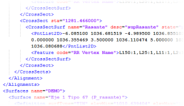
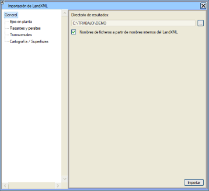
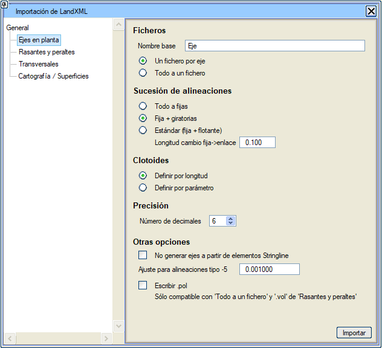
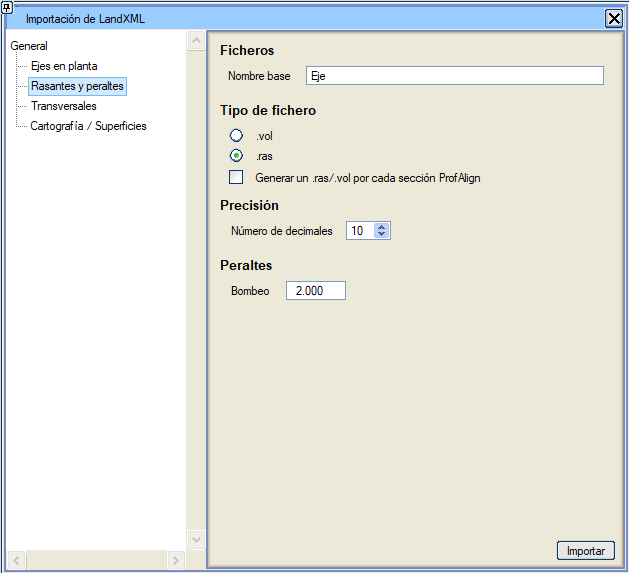
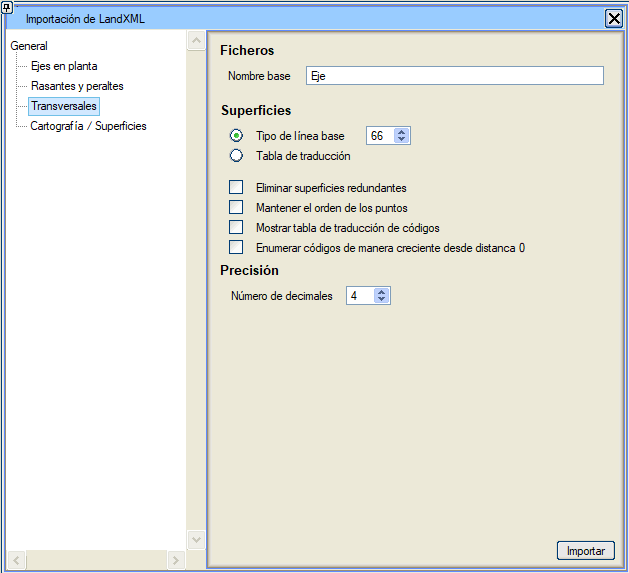
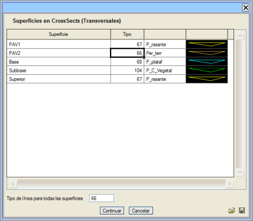
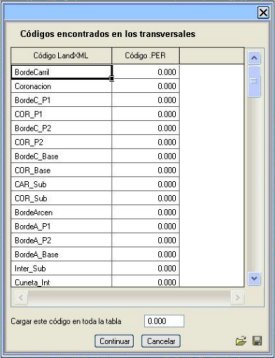
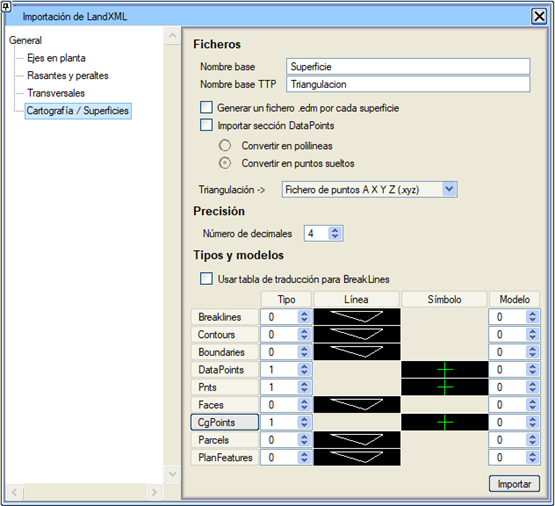

| |
|
LandXML FORMATI
|
|
Genel Bilgiler İçe Aktarma İçe aktarma klasörünün veya dizininin seçimi
Dışa AktarmaPlan Güzergahlarının İçe Aktarılması Profil ve Deverlerin İçe Aktarılması Enkesitlerin İçe Aktarılması Harita ve Yüzeylerin İçe Aktarılması Genel Bilgiler LandXML, inşaat mühendisliği ve yüzey modelleme yazılım endüstrisinin ihtiyaçlarına uyarlanmış, tescilli olmayan bir XML dosya formatıdır. Bu format, geniş bir şirketler konsorsiyumu tarafından geliştirilmiştir ve geliştirilmektedir ve dünya çapında yaygın olarak kullanılmaktadır. Amacı, farklı yazılım şirketlerinin programları arasında veya aynı programın farklı sürümleri arasında bilgi alışverişini mümkün olduğunca kolaylaştırmaktır. Kullanıcılar için gerekli tüm bilgileri ve geliştiriciler için özellikleri içeren birkaç web sitesi bulunmaktadır. Istram, LandXML dosya okuyucusu içinde, bir güzergahtaki deverleri temsil edecek olan Cant elemanlarını analiz edebilir. Bunlar, onları içeren her eksende çiftler halinde okunur ve onlardan her eksen için deverlerin .prl dosyası oluşturulur. İçe Aktarma LandXML içe aktarma kutusuna, hem Dosya → LandXML İçe Aktar menüsünden hem de GÜZERGAH PROJESİ modülünün PLAN → İçe Aktar → LandXML (xml) menüsünden erişilebilir. 
Bu iletişim kutusu iki bölüme ayrılmıştır. Sol taraf, kullanıcının içe aktarılacak nesne veya nesnelerin türünü seçebileceği bir ağaç yapısından oluşurken, sağ tarafta seçilen nesne türüyle ilgili farklı içe aktarma seçenekleri gösterilir. İçe aktarma klasörünün veya dizininin seçimi Ağacın Genel düğümünden kullanıcı, içe aktarma işlemi sonucunda oluşacak dosyaların kaydedileceği klasörü seçebilir. Varsayılan olarak mevcut klasör seçilir, ancak [...] butonuna basarak kullanıcı başka bir konum seçebilir. Oluşturulan dosyaların adı, LandXML dosyasındaki nesnelerin dahili adlarına göre olacaktır. Plan Güzergahlarının İçe Aktarılması Plan güzergahlarının içe aktarılması için program, .xml dosyasında bulunan her bir güzergah için bir .cej dosyası oluşturma veya hepsini içerecek tek bir .cej oluşturma seçeneği sunar. Ardından, oluşturulacak aliyman tipi belirlenir ve aşağıdaki olanaklar sunulur:
Plan verilerinin girilmesinde belirli sınırlamalara sahip programlardan gelen bazı güzergahlar, örneğin ardışık iki klotoid kolunu içerebilmek için çok küçük düz aliymanlar içerir.
Bu metodoloji belirsizlikler getirebilir, bu nedenle içe aktarıcı bu sabit aliymanları bağlantı aliymanlarına dönüştürür ve önceki serbest aliymanı bir döner aliymanla değiştirir. Bu durumda, Sabit -> bağlantı değişim uzunluğu parametresi, bir sabit aliymanın bağlantıya dönüştürülmemesi için sahip olması gereken minimum uzunluğu belirtir. Klotoidlere gelince, .cej'de uzunluklarına mı yoksa parametrelerine mi göre tanımlanacağına karar vermek mümkündür. 
Aşağıdakiler, aliyman dizisi olarak "Tümü sabit" seçildiğinde geçerlidir. Güzergah teğet olmayan aliymanlarla geldiğinde, içe aktarıcı kırık noktalarını kabul eder. Bir klotoid teğet olmadığında veya yarıçapları teğet olduğu ana aliymanlarla uyuşmadığında, içe aktarıcı klotoidi kilitlemek için Tip = 5 (nokta ve azimut ile doğru) veya Tip = -5 (nokta ve azimut ile dairesel) bir aliyman ekler. "-5 tipi aliymanlar için Ayarlama = 0.001" parametresi, "tam tur dönen" aliyman döngülerini önlemek için yarıçapları biraz değiştirir. Bu her zaman başarılamaz, çünkü klotoidin yarıçapı ile bitişik dairesel yayın yarıçapı arasındaki uyumsuzluğun büyüklüğüne bağlıdır, bu nedenle PLAN menüsünde güzergahı gözden geçirmek gerekir. Bir liste, güzergahın analizini ve uyumsuzlukları içerir.
Bir .pol dosyası yazılır. Bu dosyayı yazmak için, "Tümü tek bir dosyaya" ve "Dosya tipi.vol" seçili olmalıdır. Bu son seçenek, ağacın Profiller ve Deverler Düğümünde bulunur. Profil ve Deverlerin İçe Aktarılması Ondalık basamak sayısı ve hassasiyet belirtilir ve elde edilecek dosya türü seçilir:
 Enkesitlerin İçe Aktarılması Eğer içe aktarılacak LandXML dosyası enkesitler içeriyorsa, bunlardan ilgili .per dosyalarını oluşturmak mümkündür. Bunun için bir temel çizgi tipi (varsayılan olarak L66) belirtmek yeterlidir; öyle ki, bir enkesitin farklı çizgileri içe aktarılırken, programın .xml'de bulduğu ilk çizgiye o temel çizgi tipi atanır, bir sonrakine öncekinin tipi bir artırılarak atanır ve bu şekilde devam eder. Örneğin, içe aktarılacak enkesitler her biri 4 çizgi içeriyorsa ve temel tip olarak 66 bırakılırsa, oluşturulan .per'de 66, 67, 68 ve 69 tipi çizgiler elde edilir. 
Enkesitleri içe aktarmanın başka bir yolu da bir dönüşüm tablosu kullanmaktır. Bu seçenek seçildiğinde, LandXML dosyalarının enkesitlerinde bulunan farklı yüzeylere, temel bir çizgi tipinden otomatik olarak atanmak yerine, çizgi tiplerini atama imkanı vardır. Bu şekilde ve İçe Aktar butonuna basıldıktan sonra, kullanıcının dönüşüm tablosunu oluşturabileceği aşağıdaki iletişim kutusu gösterilir:  Bu kutuda, .xml'de bulunan farklı yüzeyler gösterilir ve kullanıcı her birine atamak istediği tipi belirtebilir. Tüm yüzeyler için çizgi tipi seçeneği, bu alanda belirtilen aynı çizgi tipinin bulunan tüm yüzeylere atanmasına neden olur.  ve butonları, farklı çalışma oturumlarında kullanılabilmeleri için dönüşüm tablolarını .txt dosyalarına sırasıyla yüklemeyi ve kaydetmeyi sağlar. ve butonları, farklı çalışma oturumlarında kullanılabilmeleri için dönüşüm tablolarını .txt dosyalarına sırasıyla yüklemeyi ve kaydetmeyi sağlar.Gereksiz yüzeyleri sil seçeneği ile, program enkesitlerin yüzeylerini oluştururken diğerlerinin içinde bulunan yüzeyleri siler. Bu seçenek, içe aktardığımız dosyanın tekrar eden noktaları olan çeşitli yüzeylere sahip olduğunda kullanılır. Enkesitleri içe aktarırken, program çizgileri eksene göre 'böler' ve böylece her çizginin köşe noktalarının sırasını değiştirir. Bazı durumlarda bu etki istenmez. Bunu önlemek için, Noktaların sırasını koru seçeneğini etkinleştirmek gerekir. LandXML dosyaları içe aktarıcısı, ISTRAM®/ISPOL®'ün LandXML dosyalarına yazdığı enkesitlerin kodlarını dikkate alır, yani enkesit dosyaları LandXML dosyasının kodları dikkate alınarak oluşturulur. Profillerle ilişkili kodlar başka bir program tarafından oluşturulduğunda ve kullanılanlarla bir karşılığı olmadığında, ilgili seçeneği işaretleyerek bir kod dönüşüm tablosu oluşturmak mümkündür. Bu durumda, içe aktarma işlemi sırasında kodlar arasında karşılık oluşturulabilen bir iletişim kutusu gösterilir. Kodları 0 mesafesinden artan şekilde numaralandır kutucuğu etkinleştirildiğinde, kodlara 0 mesafesindeki nokta için kod değeri 1'den başlayarak artan değerler verilir. Harita ve Yüzeylerin İçe Aktarılması LandXML dosyaları içe aktarıcısı, .xml dosyasında bulunan yüzeylerden ve tekil noktalardan .edm dosyaları da oluşturabilir. Her yüzey için bir .edm dosyası oluştur seçeneği etkinken, .xml'de bulunan her yüzey için o yüzeyle ilişkili bir .edm oluşturulur. Önceki seçenek etkin değilse, her yüzeyin belirli bir modele (0,1,2,...) yazıldığı tek bir .edm dosyası oluşturulur. İçe aktarmaya eklenen başka bir olasılık da, DataPoints elemanlarını tekil noktalar veya polilineler olarak çevirme imkanını seçmemizdir. Varsayılan olarak tekil noktalar olarak çevrilirler. Ayrıca, Breaklines, Contours, Boundarys, Parcels veya PlanFeatures'ı bir çizgi tipi ve bir modelle ve DataPoints ile CgPoints'i bir sembol tipi ve bir Istram modeliyle tanımlayabilirsiniz. İçe aktarmada bir harita .edm dosyası oluşturulacaktır. Parcel elemanlarına gelince: Her Parcel elemanı kapalı bir poliline oluşturur. Sadece çizgilerden ve eğrilerden oluşan Parcel elemanları çevrilecektir. CgPoint elemanlarına gelince, bu elemanların "code" özelliği metin olarak oluşturulabilir. [CgPoint] butonunda, name ve code özniteliklerinin oluşturulması için yapılandırma seçenekleri bulunur. 
Ayrıca, LandXML'in Definition bölümlerinden TTP dosyaları da oluşturulabilir. LandXML dosyasının içerdiği her Definition bölümü için bir TTP dosyası oluşturulur. TTP dosyalarının adı, TTP temel adı kutucuğunda belirtilir. BreakLines için dönüşüm tablosu kullan: Eğer bu kutucuk etkinse, her bir BreakLine türü için çizgi tipi ve modeli detaylandırılabilir. Dışa Aktarma ISTRAM®/ISPOL® ile LandXML formatına dosya dışa aktarma veya oluşturma, programın çeşitli bölümlerinden mümkündür:
Tekil noktalar <CgPoint> elemanları olarak, eşyükselti eğrileri <Contour> elemanları olarak ve geri kalan çizgiler <BreakLine> elemanları olarak yazılır.
|